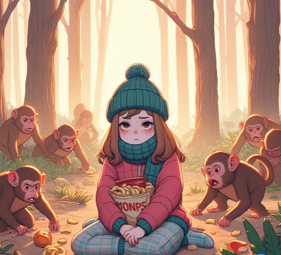
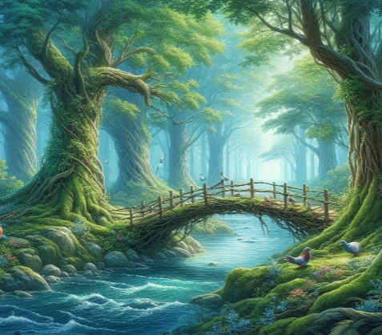
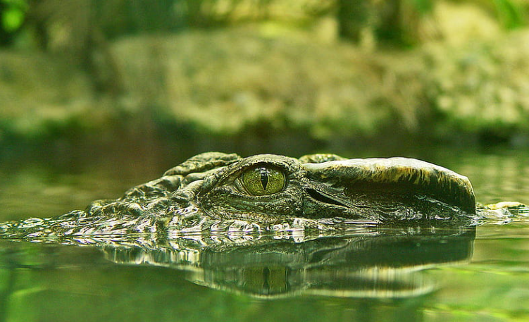
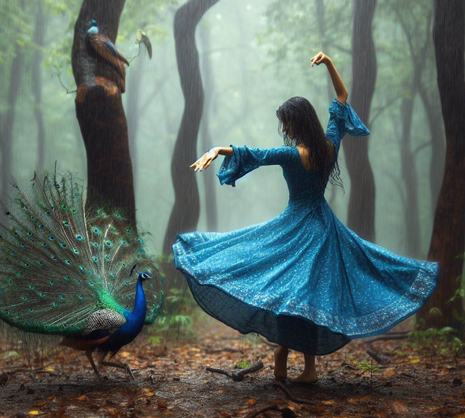
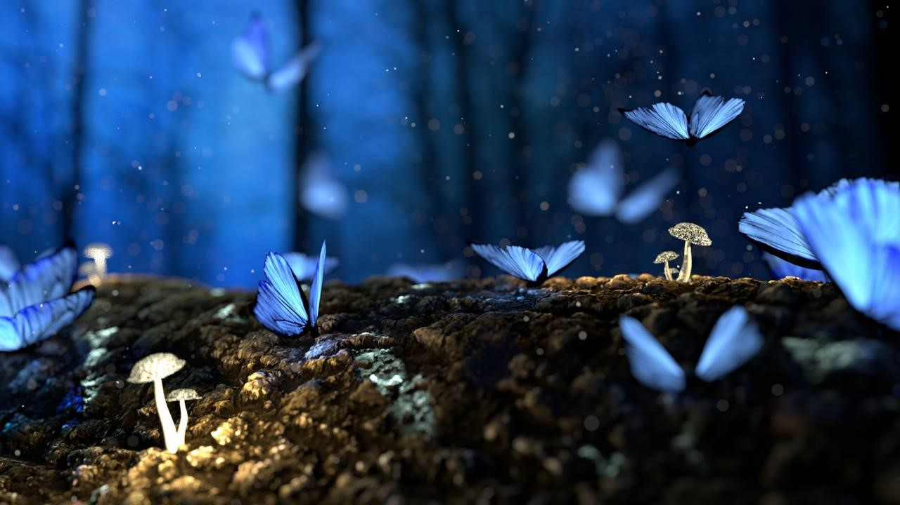

Continued journey in the woods
I only have a packet of chips so I continued my journey with this only.
And after thirty minutes of huge walk and with my tired face I encounted with a group of monkeys.
Seemed so nice, until they snatched my chips packet. I ran after them but once again lost in the core of woods.
I was astonished by the view next to me.

A very my beautiful, charming scenario was there next to me. The core of woods covered with green and blue.
The peace has its own level of silence.
The chirping of birds, the fly of free birds in the endless sky.
The harmonious word of peigons. The mellifluous song of nightingale. The dulcet wave of water. Melodoius air, with no dust.
And my green eyes by the view of greenery. The braches of old trees are making a bridge.
Seriously, never seen green-brown bridge even which is not made by humans.
The water under the bridge is so pure as the air in that area.

There was many trees so I climbed one tree and snapped one fruit. The alien fruit is like guava.
But there was a mango tree so as I like mango most, so ate it.
Suddenly, the branch on which I was there snapped and some of the leaves fell into the water. I grabbed the branch tighly, with my hand and leg.
But it felt like I could not continue it and might fall into water. Suddenly I saw two pebble like object in the water.
I had collected all my strength and managed to came into another side of the bridge.
Collected my strength and ran forward.
Actually the two pebble like objects are the eyes of crocodile. After a long rush I am here in blue.
All of a sudden greenery turned bluish. Amazing brown woods have blue leaves.
The crowd of Butterfly making multiple patterns.
Now its a combinaion of greenery & bluish, that is making this earth heaven.
I turned my face up and seen the clouds. The heavy white clouds are turning grey.
Suddenly I found a big drop of water touched my check. Raining is started.

A peacock was dancing in front of me. And I started to dance with it. My deep blue coloured frock
has given me peacock look. Slowly the jovial drizzle converted into torrent.
I found a wooden door and shady leave so I hid myself.
The melodious happy sound of rain I had never felt in my busy life.
It was soothening. But after few hours I was feeling bored.
I saw a door behind me. Unexpectedly, my eyes rotated 45 degree and I found my friends back in the lost woods.
I ran towards them, but I fell from bend of creepers. They rescued me.nIt was a heavy rain so we went in that house and asked for help.
An old gandpa, the owner of the world's best place,house, allowed us to stay.
The house inside seems horrific but well maintained. He was so nice.
But the storey house has leakage roof.
The old man introduced himself as a scientist~ Mr.Nathu who came in peace and in the core of woods.

The heart of nature is the heaven in which he is living for more than 40 years.
He had done a lots of experiment for the development of nature. And the blue leaves were the magic of his chemicals.
But still it looked so horrific, his lab, his tone and words scared us.We had visited his lab.
The lab contains few chemicals, lots of books, other lab items and one astrology book.
It was fascinating so I opened the book. The book's page, where it was a story of a girl, I think it was a story of a girl.
So it was written about a lazy girl and a fairy event that made her superwomen and World is saved by her.
Last some pages were blank. And the book ends.
This sparked the idea that is this really going to be happen because I don't beleive in these things.
But as the world is formed, every thing seemed on the basis of probability and statistics.

The view outside the window was so astronishing.
Next day, the bright sunshine touched my eyes and I woke up.
I went to the lab and seen the Scientist is writting something but as soon as I entered in the lab he stopped his pen.
I asked him - what was that but he denied to show me. It was the same astrology book.
We all friend decided to go back and the astrologer-scientist had handed a map to us.
By 10 a.m. we reached our respective homes. I got news that I am selected by a research company "DORALINK".
I have to join today by 11:00 a.m. So I went there in hurry. My friend Skye has also got selected in the same company.
We started our work together.

It is ten year today, since I have joined this company. And today we are getting signals from the "UpdikeSUV108", a space
satellite which was lost in the endless space. The signals is may be of Aliens.
I'm still amazed when I remember about my hike.
I don't know what was on the last page of the astrologer's book, might be prediction of future...
Story Continued...
The view outside the window was so astronishing.